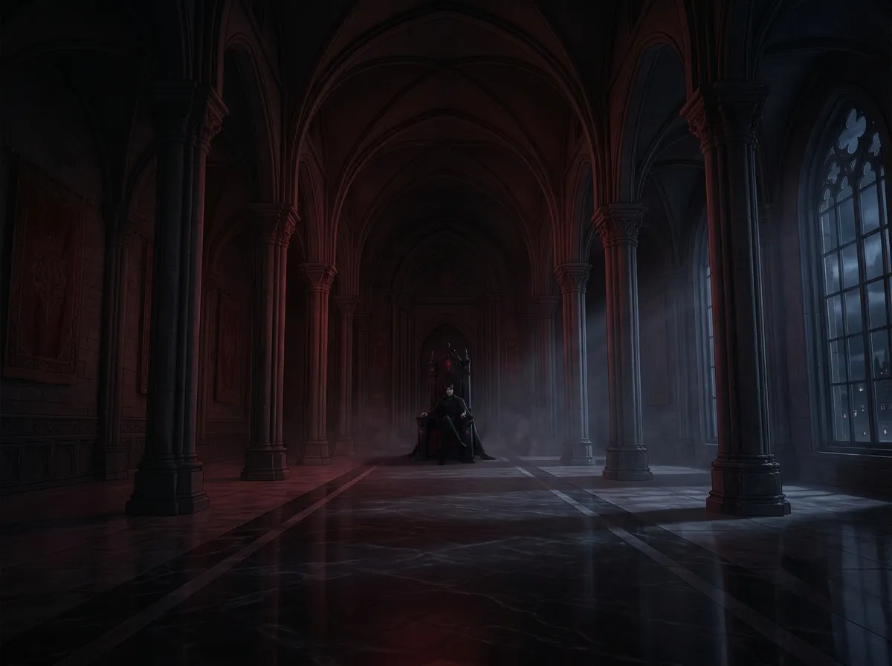
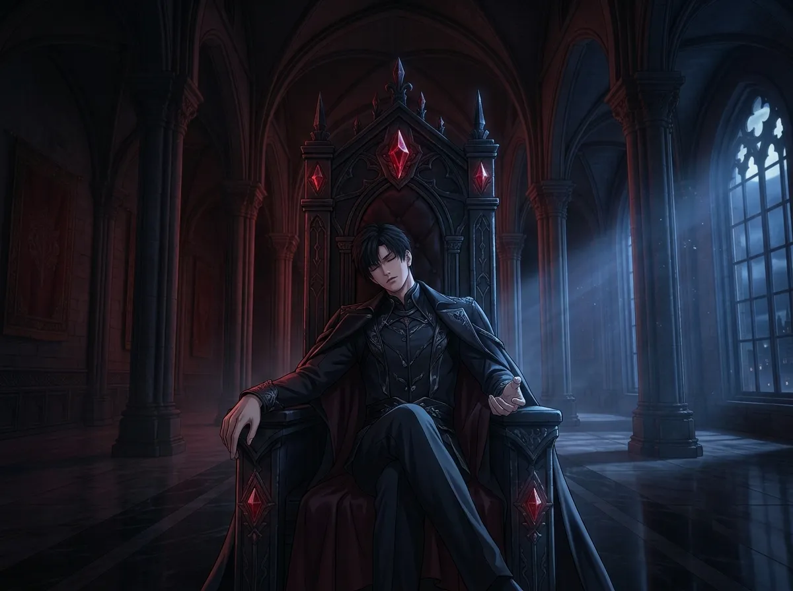
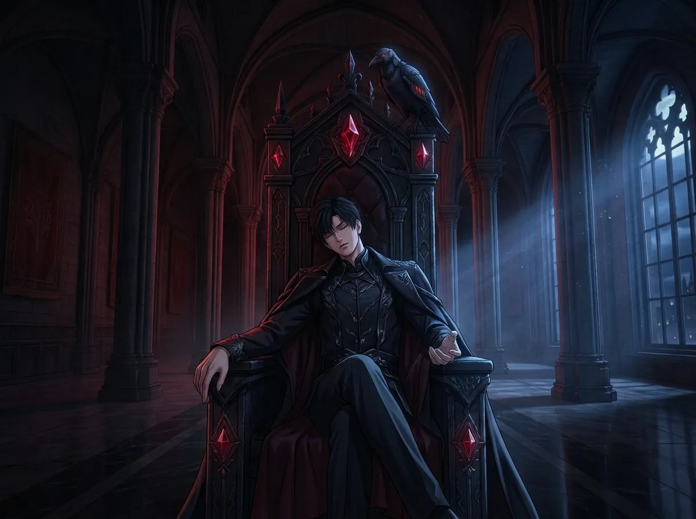
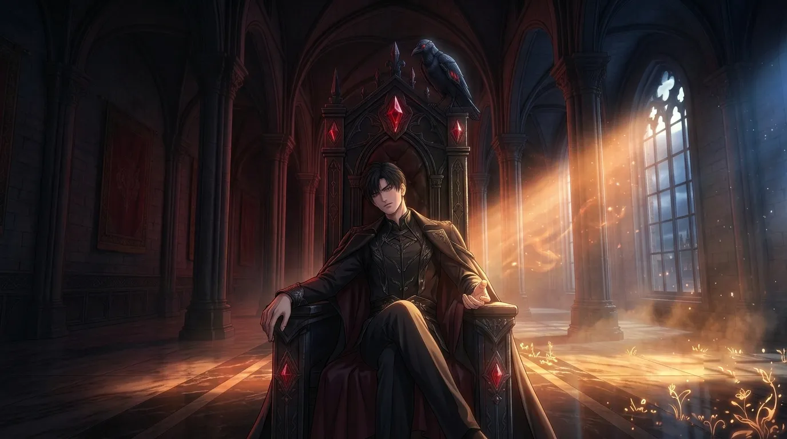
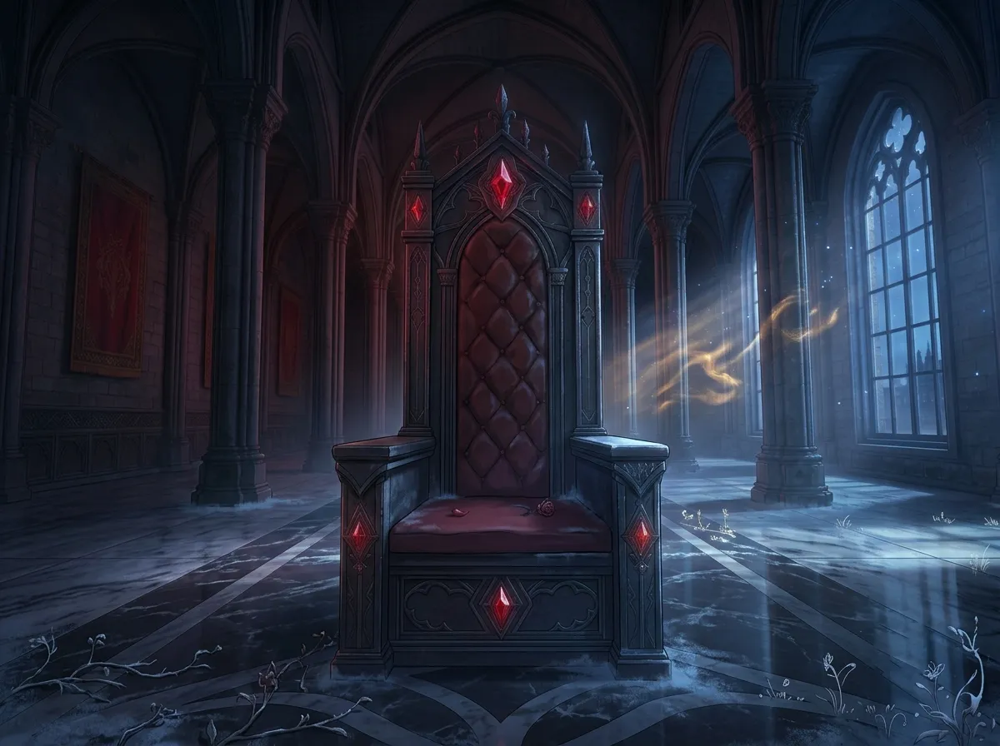

It's not a chair. It's the only place he knows how to rest.
People think the throne is about power.
They see him sitting there, alone, in the middle of a room too big for one person. They think he is showing off. They think he is reminding everyone who is in charge.
They are wrong.
The throne is not about power. The throne is about something else. Something he has never told anyone. Something he doesn't know how to explain.
The throne is the only place he knows how to rest.
This is the story of that place.

The throne room is too big.
It was built for ceremonies. For audiences. For crowds that never come. For people who never stay.
It is cold. It is empty. It is the loneliest room in the N109 Zone.
He spends most of his time in it.
Not because he has to. Because he doesn't know where else to go. Because the throne room is the only place that feels like it belongs to him. Because the throne room is the only place that doesn't ask him to be someone else.
He has offices. He has rooms. He has spaces that are smaller. Warmer. More comfortable. He doesn't use them. He uses the throne room. The cold one. The empty one. The one that is too big for one person.
He chooses the empty room. Not because he likes it empty. Because the empty room is the only room that doesn't expect anything from him.
In the empty room, he doesn't have to be the person everyone expects him to be. He doesn't have to be the king. He doesn't have to be the monster. He doesn't have to be anything.
He can just be the person sitting in a room that is too big for one person.

People see the throne and they see power. They see the dark metal. The high back. The way it sits in the center of the room like a monument.
They don't see what he sees.
He sees the only place in the world where he can stop pretending.
He doesn't sit on the throne the way a king sits on a throne. He slouches. He leans back. He lets his head fall against the cold metal. He closes his eyes.
He would never let anyone see him like that. He would never let anyone see how he sits when no one is watching.
But that's how he sits. That's how he sits on the throne. Like someone who forgot how to be a king. Like someone who is too tired to be anything.
He doesn't sit like a king. He sits like someone who is tired. Someone who has been carrying too much for too long. Someone who finally found a place where he doesn't have to carry anything.
The throne is not a symbol of power. It is a symbol of permission. Permission to rest. Permission to stop. Permission to be the person he is when no one is watching.
He doesn't let anyone see it. He doesn't let anyone see the way he sits when he thinks he's alone. He doesn't let anyone see the way he closes his eyes and breathes.
But that's who he is. That's who he is on the throne. The only place he knows how to be real.

He fell asleep on the throne once.
Just once. He doesn't remember falling asleep. He remembers being tired. He remembers closing his eyes. He remembers waking up hours later, alone, with Mephisto watching him.
He had never fallen asleep there before. He had never let himself relax that much. He had never let himself be that vulnerable.
He doesn't know why it happened that night. He doesn't know what was different. He only knows that something in him let go. Something in him stopped fighting. Something in him trusted the throne enough to sleep on it.
He woke up. He sat up. He looked at Mephisto. Mephisto didn't caw. Mephisto didn't move. Mephisto just looked at him.
He never told anyone. Mephisto never told anyone.
He doesn't plan to fall asleep. He doesn't plan to rest. He doesn't plan to let go. He fights it. Every time. He fights the tiredness. He fights the need. He fights the desire to stop.
But that night, he lost. He stopped fighting. He let go. He fell asleep on the one place he thought he would never fall asleep.
He doesn't know if that was a victory or a defeat. He doesn't know if that was progress or surrender. He only knows that he slept. And that the throne held him.

She walked into the throne room once. She walked in like she belonged there.
He was on the throne. He was sitting the way he sits when no one is watching. He was real. He was vulnerable. He was the person he only allows himself to be when he is alone.
She saw him. She saw the way he was sitting. She saw the way he was looking at her. She saw the way his guard was down.
She didn't say anything. She didn't point it out. She didn't make him feel like he had been caught.
She just walked in. She sat down. Not on the throne. On the floor. In front of the throne. Where she could see him. Where she could be near him. Where she could be in his space without taking it from him.
He didn't know what to do. He didn't know what to say. He had never been seen like that. He had never been seen on the throne, in the throne room, in the place where he is real.
She saw him. She stayed. She didn't leave.
She walked in. She saw him. She stayed. The throne room changed. It became something else. Something warmer. Something less empty. Something more like a place where someone could live.
He didn't know the throne room could change. He thought it was always cold. He thought it was always empty. He thought it was always the loneliest room in the N109 Zone.
She proved him wrong. She proved that the room could be different. She proved that the room could be a place where someone stayed.

She leaves. She always leaves. She has places to go. Things to do. People to see.
He sits on the throne. He doesn't move. He doesn't follow her. He doesn't ask her to stay. He doesn't know how.
The room is cold again. The room is empty again. The room is the loneliest room in the N109 Zone again.
He sits on the throne. He closes his eyes. He remembers the way she looked. He remembers the way she sat on the floor. He remembers the way the room changed when she was in it.
He doesn't know what to do with the memory. He doesn't know what to do with the feeling. He doesn't know what to do with the way the room feels different now that she's gone.
He sits on the throne. He waits. He doesn't know what he's waiting for.
The throne room was always cold. He was used to it. He was comfortable in it. He didn't know it could be anything else.
She showed him it could be warm. She showed him it could be a place where someone stayed. She showed him it could be more than an empty room.
Now that she's gone, the room feels colder than before. Not because it changed. Because he knows what it could be. He knows what it could feel like. He knows what it's missing.
He sits on the throne. He waits. He doesn't know if she'll come back. He doesn't know how to ask. He only knows that the room is colder now that he knows what it could be.
Sylus sits on his throne. He sits there because it's the only place he knows how to rest. The only place he knows how to be real. The only place he knows how to be himself.
People think the throne is about power. They are wrong. The throne is about permission. Permission to stop. Permission to be tired. Permission to be the person he is when no one is watching.
She walked into his throne room once. She saw him. She stayed. She didn't leave. She made the room warm. She made the room something it had never been before.
Now he sits on the throne. He remembers. He waits. He doesn't know if she'll come back. He doesn't know how to ask.
But he sits on the throne. The only place he knows how to be. The only place he knows how to stay.